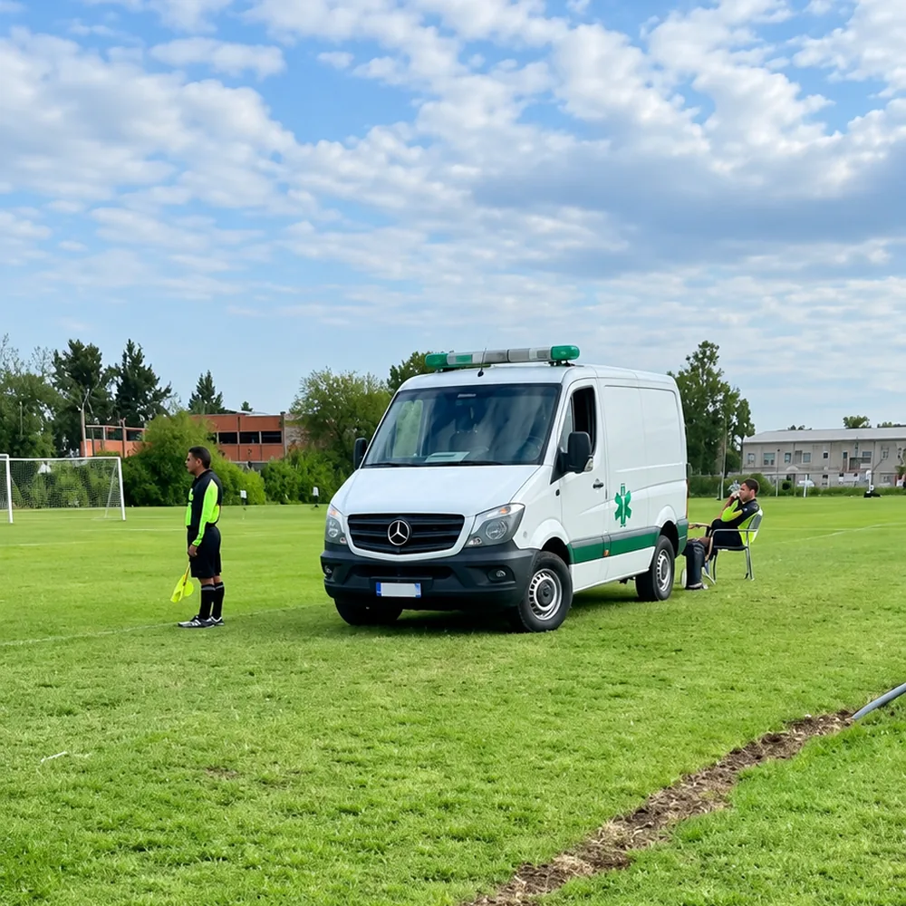

6 canchas de fútbol 11 en Sourigues
6 canchas de fútbol 11, torneos por edades con jornadas los sábados por la tarde y los domingos por la mañana, vestuarios, buffet y servicio médico. En Camino General Belgrano 3877, Sourigues.
Escribir por WhatsApp (abre en otra pestaña) o llamá al 11 6183-7849Sáb 12 a 21 · Dom 8 a 21Cno. Gral. Belgrano 3877
Qué hay en el predio
6 canchas de fútbol 11
De césped natural, para partidos, liga y torneos.
Vestuarios y baños
“6 canchas muy buenas con confitería, vestuario y baños”, dice una reseña en Google de julio de 2025.
Buffet
La salud primero
El complejo cuenta con servicio médico. La ambulancia se estaciona al costado de la cancha.

Fotos y filmaciones
¿Alquiler y valores?
No están publicados. Preguntá por WhatsApp (abre en otra pestaña) si se puede y cuánto sale.
Torneos por edades · Fútbol 11
No te quedes afuera
Las jornadas se juegan los sábados por la tarde y los domingos por la mañana. Consultá por WhatsApp los torneos disponibles, las edades y los valores de inscripción.
Consultá por torneos (abre WhatsApp en otra pestaña)Camino General Belgrano 3877
En Google Maps puede figurar como 3799. La altura correcta es 3877.
Ver cómo llegar en Google Maps (abre en otra pestaña)| Sábado | 12 a 21 h |
|---|---|
| Domingo | 8 a 21 h |
| Lunes a viernes | Cerrado |